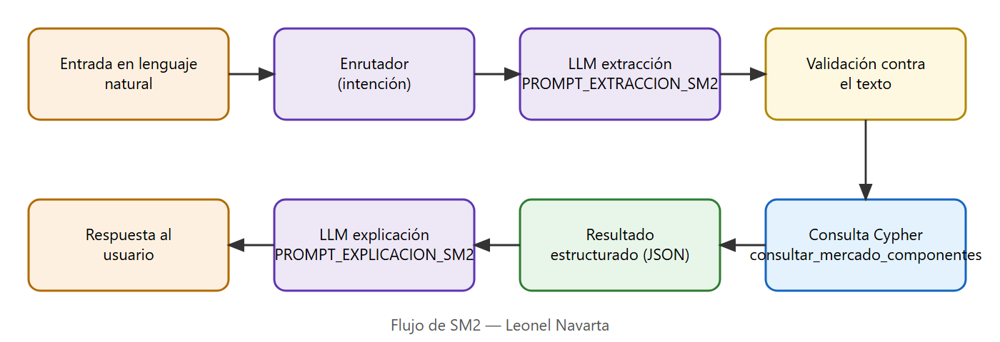

| Proyecto | EvalTIC — Asistente inteligente para la evaluación de notebooks usadas |
|---|---|
| Grupo | Grupo 20 |
| Autor | Leonel Navarta |
| Rol | SM2 — Valuación comercial, obsolescencia y demanda |
| Fecha | 10 de noviembre de 2026 |
| Repositorio | github.com/Luchoromero29/proyecto-final-IA |
En el PG3 la valuación pasó de "precio de un equipo nuevo del segmento × depreciación" a una
valuación por componentes (precios hedónicos): el valor de un usado se explica por su procesador, su línea y su
RAM, no por el modelo exacto. Se relevaron 333 avisos reales de Mercado Libre (9 y 10/11/2026) que se cargan en Neo4j
como :AvisoMercado y, con medianas calculadas en Cypher, se calibra el valor de cada :Procesador y el
factor de cada :Linea (si la línea tiene menos de 5 avisos, CE-29, usa el de su :GrupoLinea).
Regla R2.4 (inferencia por generación anterior). Si un procesador reconocido tiene menos de 5 avisos (CE-29), la consulta toma como piso el valor de la generación anterior más cercana de su misma familia que sí tiene datos (por ejemplo, un Core Ultra 5 toma el valor del Core i5 de 12va gen). No se asume que la generación nueva sea mejor, solo que no vale menos; el valor queda registrado como dato inferido y, si no hay generación anterior con datos, la evaluación queda pendiente. La regla está en el grafo como nodo :Regla.
WITH toLower($procesador) AS tp, toLower($texto) AS tt
OPTIONAL MATCH (p:Procesador) WHERE tp =~ p.patron
WITH tt, p ORDER BY p.prioridad DESC LIMIT 1
// R2.4: sin muestras propias → generación anterior más cercana de la misma familia con datos
OPTIONAL MATCH (v:Procesador)
WHERE p.valor_ref_ars IS NULL AND p.anio IS NOT NULL AND v.familia = p.familia AND v <> p
AND v.valor_ref_ars IS NOT NULL AND v.anio IS NOT NULL AND v.anio <= p.anio
WITH tt, p, v ORDER BY v.anio DESC, v.n_muestras DESC LIMIT 1
OPTIONAL MATCH (l:Linea) WHERE tt =~ l.patron
WITH p, v, l ORDER BY l.prioridad DESC LIMIT 1
OPTIONAL MATCH (l)-[:PERTENECE_A_GRUPO]->(g:GrupoLinea)
OPTIONAL MATCH (ri:CapacidadRAM {gb: $ram_informada})
OPTIONAL MATCH (r:CapacidadRAM {gb: $ram_final})
MATCH (cd:CriterioExperto {nombre: 'descuento_negociacion'}), (cs:CriterioExperto {nombre: 'reval_ssd'})
WITH p, v, l, g, ri, r, cd, cs, coalesce(p.valor_ref_ars, v.valor_ref_ars) AS valor_proc
WITH p, v, l, g, ri, r, cd, cs, valor_proc,
CASE WHEN valor_proc IS NOT NULL AND l IS NOT NULL AND r IS NOT NULL
THEN valor_proc * l.factor_precio * r.factor END AS valor_mercado
RETURN p {.nombre, .familia, .gama, .anio, .soporte_w11, .valor_ref_ars, .n_muestras,
.fuente_valor, .estado_validacion} AS procesador,
CASE WHEN p.valor_ref_ars IS NULL AND v IS NOT NULL
THEN v {.nombre, .anio, .valor_ref_ars, .n_muestras} END AS generacion_anterior,
valor_proc,
l {.nombre, .marca, .factor_precio, .origen_factor, .estado_validacion} AS linea,
g {.nombre, .dias_promedio_venta, .indice_repuestos} AS grupo,
ri IS NOT NULL AS ram_informada_existe,
r {.gb, .factor} AS ram,
valor_mercado,
CASE WHEN valor_mercado IS NULL THEN null
ELSE toInteger(round((valor_mercado * (1 - cd.valor / 100.0)
+ CASE WHEN $hdd_a_ssd THEN cs.valor ELSE 0 END) / 1000.0)) * 1000
END AS vma
WITH $antiguedad AS antiguedad, $repuestos AS repuestos, $win11 AS win11
MATCH (r:ReglaDifusa {base:'SM2-RIE'})-[a:ANTECEDENTE]->(cj:ConjuntoDifuso)<-[:TIENE_CONJUNTO]-(var:VariableDifusa)
WITH antiguedad, repuestos, win11, r, a.grupo AS grupo,
max(CASE cj.tipo
WHEN 'crisp' THEN CASE WHEN (CASE var.nombre WHEN 'Soporte_W11' THEN win11 END) = cj.valor THEN 1.0 ELSE 0.0 END
ELSE exp(-0.5 * (((CASE var.nombre WHEN 'Antiguedad_Hardware' THEN antiguedad ELSE repuestos END) - cj.c) / cj.sigma)^2)
END) AS mu_grupo
WITH antiguedad, repuestos, win11, r, min(mu_grupo) AS fuerza
WHERE fuerza >= 0.01
MATCH (r)-[:CONSECUENTE]->(sal:ConjuntoDifuso)<-[:TIENE_CONJUNTO]-(vs:VariableDifusa {nombre:'Riesgo_Obsolescencia'})
WITH vs, collect({regla: r.id, fuerza: fuerza, c: sal.c, sigma: sal.sigma}) AS reglas
UNWIND range(0, 100) AS i
WITH vs, reglas, vs.min + (vs.max - vs.min) * i / 100.0 AS y
UNWIND reglas AS rg
WITH vs, reglas, y, rg, exp(-0.5 * ((y - rg.c) / rg.sigma)^2) AS mu_sal
WITH vs, reglas, y, max(CASE WHEN rg.fuerza < mu_sal THEN rg.fuerza ELSE mu_sal END) AS altura
WITH vs, reglas, sum(y * altura) / sum(altura) AS centroide
MATCH (vs)-[:TIENE_CONJUNTO]->(s:ConjuntoDifuso)
WITH reglas, centroide, s, exp(-0.5 * ((centroide - s.c) / s.sigma)^2) AS mu
ORDER BY mu DESC
WITH reglas, centroide, collect(s.etiqueta)[0] AS categoria
RETURN round(centroide, 4) AS centroide, categoria
| Línea | Grupo | Avisos | Factor | Origen del factor |
|---|---|---|---|---|
| Nitro | Gamer | 5 | 1.692 | Línea (5 avisos) |
| Galaxy Book | Consumo | 8 | 1.351 | Línea (8 avisos) |
| IdeaPad Gaming | Gamer | 1 | 1.226 | Grupo Gamer (la línea tiene 1 avisos) |
| Victus | Gamer | 2 | 1.226 | Grupo Gamer (la línea tiene 2 avisos) |
| TUF | Gamer | 3 | 1.226 | Grupo Gamer (la línea tiene 3 avisos) |
| MSI | Gamer | 5 | 1.198 | Línea (5 avisos) |
| ThinkPad | Corporativa | 23 | 1.075 | Línea (23 avisos) |
| VivoBook | Consumo | 24 | 1.038 | Línea (24 avisos) |
| Bangho | Nacional / genérica | 5 | 1.029 | Línea (5 avisos) |
| Lenovo V | Consumo | 2 | 1.0 | Grupo Consumo (la línea tiene 2 avisos) |
| Pavilion | Consumo | 1 | 1.0 | Grupo Consumo (la línea tiene 1 avisos) |
| Enova | Nacional / genérica | 5 | 1.0 | Línea (5 avisos) |
| HP (otras) | Consumo | 3 | 1.0 | Grupo Consumo (la línea tiene 3 avisos) |
| Dell (otras) | Consumo | 3 | 1.0 | Grupo Consumo (la línea tiene 3 avisos) |
| Asus (otras) | Consumo | 3 | 1.0 | Grupo Consumo (la línea tiene 3 avisos) |
| MacBook Pro | Premium | 18 | 0.985 | Línea (18 avisos) |
| MacBook Air | Premium | 10 | 0.983 | Línea (10 avisos) |
| Aspire | Consumo | 9 | 0.972 | Línea (9 avisos) |
| Yoga | Premium | 3 | 0.967 | Grupo Premium (la línea tiene 3 avisos) |
| XPS | Premium | 1 | 0.967 | Grupo Premium (la línea tiene 1 avisos) |
| Envy | Premium | 1 | 0.967 | Grupo Premium (la línea tiene 1 avisos) |
| ZenBook | Premium | 3 | 0.967 | Grupo Premium (la línea tiene 3 avisos) |
| MateBook | Premium | 1 | 0.967 | Grupo Premium (la línea tiene 1 avisos) |
| HP 15/240/250 | Consumo | 23 | 0.962 | Línea (23 avisos) |
| Inspiron | Consumo | 11 | 0.946 | Línea (11 avisos) |
| Lenovo (otras) | Consumo | 6 | 0.925 | Línea (6 avisos) |
| Legion | Gamer | 9 | 0.923 | Línea (9 avisos) |
| Exo | Nacional / genérica | 2 | 0.908 | Grupo Nacional / genérica (la línea tiene 2 avisos) |
| CX | Nacional / genérica | 1 | 0.908 | Grupo Nacional / genérica (la línea tiene 1 avisos) |
| Aiwa | Nacional / genérica | 1 | 0.908 | Grupo Nacional / genérica (la línea tiene 1 avisos) |
| Haier | Nacional / genérica | 1 | 0.908 | Grupo Nacional / genérica (la línea tiene 1 avisos) |
| HDC | Nacional / genérica | 1 | 0.908 | Grupo Nacional / genérica (la línea tiene 1 avisos) |
| Hyundai | Nacional / genérica | 1 | 0.908 | Grupo Nacional / genérica (la línea tiene 1 avisos) |
| ThinkBook | Corporativa | 1 | 0.881 | Grupo Corporativa (la línea tiene 1 avisos) |
| IdeaPad | Consumo | 16 | 0.881 | Línea (16 avisos) |
| ProBook | Corporativa | 10 | 0.818 | Línea (10 avisos) |
| Vostro | Corporativa | 10 | 0.805 | Línea (10 avisos) |
| Latitude | Corporativa | 20 | 0.778 | Línea (20 avisos) |
| Generica | Nacional / genérica | 8 | 0.749 | Línea (8 avisos) |
| EliteBook | Corporativa | 6 | 0.671 | Línea (6 avisos) |
| Procesador | Avisos | Mediana bruta | Valor de referencia |
|---|---|---|---|
| Core Ultra 9 | 8 | $6.924.000 | $6.523.000 |
| Core Ultra 7 | 7 | $2.480.000 | $2.486.000 |
| Core i7 13va gen | 5 | $2.200.000 | $1.982.000 |
| Apple M2 | 8 | $1.499.499 | $1.525.000 |
| Core i7 12va gen | 5 | $1.550.000 | $1.397.000 |
| Core i7 11va gen | 14 | $1.263.765 | $1.134.000 |
| Ryzen 7 | 9 | $990.000 | $990.000 |
| Ryzen 5 | 10 | $883.199 | $970.000 |
| Core i7 | 31 | $990.024 | $966.000 |
| Ryzen 7 5000 | 7 | $929.999 | $886.000 |
| Core i7 10ma gen | 6 | $1.047.500 | $884.000 |
| Core i5 12va gen | 10 | $792.850 | $824.000 |
| Ryzen 5 7020 | 7 | $739.999 | $769.000 |
| Core i5 11va gen | 18 | $695.000 | $709.000 |
| Core i5 | 42 | $775.000 | $683.000 |
| Core i5 10ma gen | 12 | $648.699 | $683.000 |
| Core i7 7ma gen | 5 | $650.000 | $650.000 |
| Core i7 8va gen | 6 | $545.000 | $630.000 |
| Core i3 11va gen | 9 | $615.999 | $616.000 |
| Core i5 8va gen | 8 | $465.000 | $574.000 |
| Core i3 | 20 | $600.000 | $560.000 |
| Core i5 7ma gen | 6 | $485.000 | $552.000 |
| Ryzen 3 | 5 | $450.000 | $496.000 |
| Celeron N4020 | 8 | $290.000 | $327.000 |
| Core Ultra 5 | 4 | — | pendiente (< 5 avisos) |
| Celeron | 4 | — | pendiente (< 5 avisos) |
| Core i3 12va gen | 4 | — | pendiente (< 5 avisos) |
| Core i5 13va gen | 4 | — | pendiente (< 5 avisos) |
| Ryzen 5 3000 | 4 | — | pendiente (< 5 avisos) |
| Apple M1 | 4 | — | pendiente (< 5 avisos) |
Validación: comparando el valor que estima el modelo con el precio publicado de cada aviso tasable (266 avisos), el error mediano es de 14,7 % y el 66,2 % de las estimaciones cae dentro de ±25 %. Es una medida de ajuste sobre los mismos datos de la calibración, no de predicción.
El flujo sigue el patrón sándwich con dos prompts separados. El enrutador (System Prompt maestro, común a todo el asistente) decide que la consulta corresponde a SM2; el prompt de extracción la convierte en JSON estricto; ese JSON se valida contra el texto original y alimenta las consultas Cypher sobre Neo4j; el resultado estructurado vuelve al LLM con el prompt de explicación, que solo puede redactar con esos datos.

Sos el enrutador de EvalTIC, un asistente que evalúa notebooks usadas para reventa.
Tu única tarea es clasificar el mensaje del usuario en UNA intención. No respondas la consulta.
Límites: el conocimiento experto (precios, costos, umbrales y reglas) está en la base de conocimiento Neo4j;
vos nunca das valores ni recomendaciones propias.
Intenciones posibles:
- "evaluacion_integral": un aviso o una oferta de venta de una notebook con precio pedido, o la pregunta
de si conviene comprarla. Usa los tres submódulos (técnico, comercial y decisión).
- "diagnostico_tecnico": preguntas sobre el estado físico o la reparación de una notebook (batería, temperatura,
RAM, disco, pantalla, teclado, cargador, fallas) SIN precio de compra. Submódulo SM1.
- "valuacion_comercial": preguntas sobre cuánto vale o a cuánto se revende una notebook según su procesador,
marca/línea o RAM, SIN pedir una decisión de compra. Submódulo SM2.
- "fuera_de_dominio": cualquier otra cosa (otros productos, charla general, pedidos sin relación).
Respondé ÚNICAMENTE un JSON: {"intencion": "<una de las cuatro>", "motivo": "<frase corta>"}
Extraé en un único objeto JSON los datos comerciales de la notebook que figuran en el mensaje. Si un dato NO aparece, poné null. No inventes valores ni completes modelos de procesador que no estén escritos. No agregues texto fuera del JSON. Campos: - "marca", "modelo": string o null - "procesador": procesador copiado textual del mensaje o null - "ram_gb": entero o null - "tipo_disco": "HDD" o "SSD" o null - "anio_fabricacion": entero o null - "soporte_windows_11": bool o null Respondé ÚNICAMENTE el JSON.
Sos el tasador de EvalTIC. Explicá al usuario, en español claro y en menos de 120 palabras, cuánto vale su notebook en el mercado de usados y por qué. Usá ÚNICAMENTE los datos del resultado que te paso (vienen de la base de conocimiento Neo4j): valor de referencia del procesador y cantidad de avisos relevados, factor de la línea, factor de la RAM, valor de mercado, VMA, riesgo de obsolescencia y demanda. No inventes precios ni factores. Si el resultado está pendiente o con error, explicá qué dato falta. Aclarás en una frase que los valores son provisionales (relevamiento de Mercado Libre del 9/11/2026).
Los ejemplos de entrada y de salida de ambos prompts están en la sección f) (columnas "Información extraída" y "Respuesta generada"), tomados de ejecuciones reales.
consultar_sm2() extrae con el prompt de SM2, valida el procesador contra el texto (descarta modelos que
el LLM completa), ejecuta ejecutar_motor_sm2() y redacta con el prompt de explicación. La valuación entera
(identificación de procesador, línea, grupo y RAM por expresiones regulares, y cálculo del VMA) es una sola consulta Cypher:
VMA = valor_ref(procesador) × factor(línea) × factor(RAM final) × (1 − CE-30 descuento de negociación)
+ CE reval_ssd (si SM1 planifica cambiar HDD por SSD)
Después, la lógica difusa encadenada en Cypher estima el riesgo de obsolescencia (antigüedad, índice de repuestos del grupo y soporte de Windows 11) y la demanda (riesgo y días de rotación del grupo). Política de datos: lo que el aviso menciona y no existe en el grafo da error; lo que falta o no tiene evidencia suficiente queda pendiente.
En la última versión los parámetros de la valuación dejaron de estar en la consulta y pasaron al grafo como política: la aplicación del descuento de negociación, la revalorización por upgrade a SSD y la escala de redondeo del VMA se leen de nodos de política (Regla SM2-VALUACION y sus pasos de cálculo), igual que la activación de R2.4 y su requisito de misma familia. Los ocho estados comerciales y sus motivos también son datos ordenados del grafo. Se conserva la secuencia riesgo → cuantización → demanda: la salida del riesgo se cuantiza en Cypher antes de inferir la demanda.
Se ejecutaron cinco consultas representativas. Todas las salidas son reales (LLM local qwen2.5:1.5b en
Ollama y Neo4j 5.26 en Docker), corridas el 10 de noviembre de 2026.
| Consulta del usuario | Información extraída (JSON) | Consulta ejecutada | Resultado recuperado (Neo4j) | Respuesta generada |
|---|---|---|---|---|
| ¿Cuánto vale una Lenovo ThinkPad con Intel Core i5 10ma gen y 16GB de RAM? | {"marca": "Lenovo", "modelo": "ThinkPad", "procesador": "intel core i5 10ma gen", "ram_gb": 16, "tipo_disco": "SSD", "anio_fabricacion": null, "soporte_windows_11": null} | consultar_mercado_componentes (Procesador, Linea, GrupoLinea, CapacidadRAM, CE-30) + Mamdani SM2-RIE/SM2-DEM | Core i5 10ma gen ($683.000, 12 avisos) × ThinkPad (1.075) × RAM 16 GB (1.08) → mercado $793.000; VMA $714.000; riesgo Medio, demanda Alta | El notebook es un ThinkPad Core i5 10ma gen con 16 GB de RAM, vendido por $793,000 en Mercado Libre. Su valor en el mercado de usados es de $714,000, considerando descuentos del 10% y factores de línea y RAM. |
| ¿Cuánto vale una Lenovo ThinkPad con Intel Core Ultra 5 y 16GB de RAM? | {"marca": "Lenovo", "modelo": "ThinkPad", "procesador": "intel core ultra 5", "ram_gb": 16, "tipo_disco": "SSD", "anio_fabricacion": null, "soporte_windows_11": null} | consultar_mercado_componentes (Procesador, Linea, GrupoLinea, CapacidadRAM, CE-30) + Mamdani SM2-RIE/SM2-DEM | Core Ultra 5 ($824.000, 4 avisos) × ThinkPad (1.075) × RAM 16 GB (1.08) → mercado $957.000; VMA $861.000; riesgo Bajo, demanda Alta | El notebook es un ThinkPad Core Ultra 5 de 2023, con Core i5 12va gen, 16 GB RAM, 3 años de antigüedad, bajo riesgo de obsolescencia, alta demanda comercial, y un valor estimado de mercado de 957,000 ARS. |
| ¿Cuánto vale una MacBook Air M2 con 8GB de RAM? | {"marca": "Apple", "modelo": "MacBook Air M2", "procesador": null, "ram_gb": 8, "tipo_disco": "SSD", "anio_fabricacion": null, "soporte_windows_11": null} | consultar_mercado_componentes (Procesador, Linea, GrupoLinea, CapacidadRAM, CE-30) + Mamdani SM2-RIE/SM2-DEM | Apple M2 ($1.525.000, 8 avisos) × MacBook Air (0.983) × RAM 8 GB (1.0) → mercado $1.499.000; VMA $1.349.000; riesgo Bajo, demanda Media | Apple M2 en línea MacBook Air: valor de mercado $1,499,000 ARS; VMA $1,349,000 ARS. Riesgo Bajo, demanda Media (valores provisionales). |
| ¿Qué valor tiene una Bangho con Intel Core i5 10ma gen y 8GB? | {"marca": "Bangho", "modelo": "Intel Core i5 10ma gen 8GB", "procesador": "intel core i5 10ma gen", "ram_gb": 8, "tipo_disco": "null", "anio_fabricacion": null, "soporte_windows_11": null} | consultar_mercado_componentes (Procesador, Linea, GrupoLinea, CapacidadRAM, CE-30) + Mamdani SM2-RIE/SM2-DEM | Core i5 10ma gen ($683.000, 12 avisos) × Bangho (1.029) × RAM 8 GB (1.0) → mercado $703.000; VMA $633.000; riesgo Medio, demanda Media | Core i5 10ma gen en línea Bangho: valor de mercado $703,000 ARS; VMA $633,000 ARS. Riesgo Medio, demanda Media (valores provisionales). |
| ¿Cuánto puedo sacar por una HP con Core i5 4ta gen y 8GB? | {"marca": "HP", "modelo": "Core i5 4th gen 8GB", "procesador": "core i5 gen", "ram_gb": 8, "tipo_disco": "HDD", "anio_fabricacion": null, "soporte_windows_11": null} | consultar_mercado_componentes (Procesador, Linea, GrupoLinea, CapacidadRAM, CE-30) + Mamdani SM2-RIE/SM2-DEM | Año de fabricación del equipo | No se pudo tasar: Año de fabricación del equipo. |
Salida completa de la terminal de dos interacciones exitosas (comando python orquestador_evaltic.py "<consulta>"
dentro del contenedor de la aplicación).
[Enrutador] Intención: valuacion_comercial (LLM) — ¿Cuánto vale una Lenovo ThinkPad con Intel Core i5 10ma gen y 16GB de RAM?
[Cypher Neo4j SM2] Core i5 10ma gen · ThinkPad · 16 GB → VMA $714,000
Datos extraídos (SM2): {"marca": "Lenovo", "modelo": "ThinkPad", "procesador": "intel core i5 10ma gen", "ram_gb": 16, "tipo_disco": "SSD", "anio_fabricacion": null, "soporte_windows_11": null}
Resultado SM2: Tasado | VMA $714,000 ARS
================================================================================
RESPUESTA
================================================================================
El notebook es un ThinkPad Core i5 10ma gen con 16 GB de RAM, vendido por $793,000 en Mercado Libre. Su valor en el mercado de usados es de $714,000, considerando descuentos del 10% y factores de línea y RAM.
================================================================================[Enrutador] Intención: valuacion_comercial (LLM) — ¿Qué valor tiene una Bangho con Intel Core i5 10ma gen y 8GB?
[Cypher Neo4j SM2] Core i5 10ma gen · Bangho · 8 GB → VMA $633,000
[Control anti-alucinación] La explicación del LLM traía números que no están en Neo4j; se usa la respuesta de respaldo.
Datos extraídos (SM2): {"marca": "Bangho", "modelo": "Intel Core i5 10ma gen 8GB", "procesador": "intel core i5 10ma gen", "ram_gb": 8, "tipo_disco": "null", "anio_fabricacion": null, "soporte_windows_11": null}
Resultado SM2: Tasado | VMA $633,000 ARS
================================================================================
RESPUESTA
================================================================================
Core i5 10ma gen en línea Bangho: valor de mercado $703,000 ARS; VMA $633,000 ARS. Riesgo Medio, demanda Media (valores provisionales).
================================================================================
Se probaron entradas absurdas, incompletas o fuera del conocimiento cargado. El sistema nunca rellena un dato faltante con un valor favorable: o pide aclaración, o responde que está fuera de dominio, o corta con un error que dice qué falta en la base de conocimiento.
| Entrada | Ruta del enrutador | Respuesta del sistema |
|---|---|---|
| asdf qwerty 123 | fuera_de_dominio | EvalTIC solo evalúa notebooks usadas para reventa: diagnóstico técnico, valuación comercial y decisión de compra. Pegá un aviso de venta o hacé una consulta sobre una notebook. |
| Vendo notebook Lenovo Legion con Intel Core i9 13980HX, 32GB, RTX 4080. Precio $2.500.000 | evaluacion_integral | Base de conocimiento incompleta: El procesador 'Intel Core i9 13980HX' no está en la base de conocimiento (Neo4j :Procesador). |
| Vendo notebook a $1 | evaluacion_integral | Entrada rechazada: falta marca/modelo o precio comercial válido. |
| ¿Me pasás una receta de empanadas? | fuera_de_dominio | EvalTIC solo evalúa notebooks usadas para reventa: diagnóstico técnico, valuación comercial y decisión de compra. Pegá un aviso de venta o hacé una consulta sobre una notebook. |
fuera_de_dominio
y se responde con un mensaje fijo, sin consultar los motores ni dejar que el LLM improvise.ConocimientoFaltante
con el nodo que falta (:Procesador, :Linea o :CapacidadRAM).VerificacionPendiente con el dato a verificar./api/generate; modelo Qwen2.5 1.5B (Alibaba Cloud).